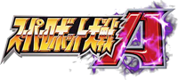
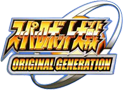
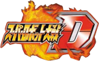
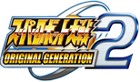
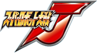
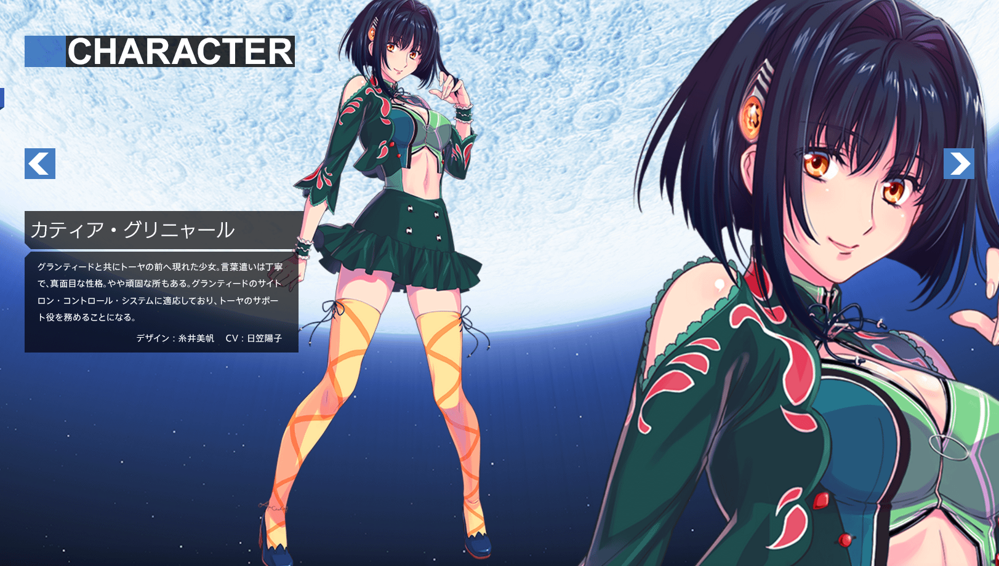

<div ref="streamContainer" class="stream-container">
    <div class="post-list-container post-list-container-shadow">
        <div class="post">
            <div class="post-head-wrapper"
                 style="background-image: url('/2017/04/14/带你认识超级机器人大战/Banpresto.png')">
                <div class="post-title">
                    介绍———スーパーロボット大戦
                    <div class="post-meta">
                        <time datetime="2017-04-14T23:28:35.000Z" itemprop="datePublished">
                            2017-04-14 23:28
                        </time>&nbsp;
                        
                        
                        <i class="material-icons" style="">folder</i>
                        
                        <a href='/categories/Blog/'>Blog</a>
                        
                        
    
                        
                        
                        <i class="material-icons" style="">label</i>
                        
                        <a href='/tags/GAME/'>GAME</a>, 
                        
                        <a href='/tags/超级机器人大战/'>超级机器人大战</a>
                        
                        
                    </div>
                </div>
            </div>
    
            <div class="post-body-wrapper">
                <div class="post-body">
                    <!-- no node -->

<span id="more"></span>

<h1 id="スーパーロボット大戦"><a href="#スーパーロボット大戦" class="headerlink" title="スーパーロボット大戦"></a>スーパーロボット大戦</h1><blockquote>
<p>中文名：超级机器人大战</p>
</blockquote>
<p></p>
<p>这款游戏充斥着我的童年，哪怕至今，我手里依然还有这款游戏。哈哈，但是因为生活、工作，并不会经常的像儿时那样玩起。但是我依然很喜欢，并且骄傲的提起，我玩过。心中只有几个字可以形容，那就是很好玩。也不讲这款游戏的历史了，因为那时我还很小很小。</p>
<p>那么我来介绍下我一路怎么玩过来的吧！</p>
<h2 id="スーパーロボット大戦A"><a href="#スーパーロボット大戦A" class="headerlink" title="スーパーロボット大戦A"></a>スーパーロボット大戦A</h2><blockquote>
<p>超级机器人大战A 2001年9月21日 GBA </p>
</blockquote>
<p></p>
<h2 id="スーパーロボット大戦R"><a href="#スーパーロボット大戦R" class="headerlink" title="スーパーロボット大戦R"></a>スーパーロボット大戦R</h2><blockquote>
<p>超级机器人大战R 2002年8月2日 GBA</p>
</blockquote>
<p></p>
<h2 id="スーパーロボット大戦ORIGINAL-GENERATION"><a href="#スーパーロボット大戦ORIGINAL-GENERATION" class="headerlink" title="スーパーロボット大戦ORIGINAL GENERATION"></a>スーパーロボット大戦ORIGINAL GENERATION</h2><blockquote>
<p>超级机器人大战OG 2002年11月22日 GBA</p>
</blockquote>
<p></p>
<h2 id="スーパーロボット大戦D"><a href="#スーパーロボット大戦D" class="headerlink" title="スーパーロボット大戦D"></a>スーパーロボット大戦D</h2><blockquote>
<p>超级机器人大战D 2003年8月8日 GBA</p>
</blockquote>
<p></p>
<h2 id="スーパーロボット大戦ORIGINAL-GENERATION2"><a href="#スーパーロボット大戦ORIGINAL-GENERATION2" class="headerlink" title="スーパーロボット大戦ORIGINAL GENERATION2"></a>スーパーロボット大戦ORIGINAL GENERATION2</h2><blockquote>
<p>超级机器人大战OG2 2005年2月3日 GBA</p>
</blockquote>
<p></p>
<h2 id="スーパーロボット大戦J"><a href="#スーパーロボット大戦J" class="headerlink" title="スーパーロボット大戦J"></a>スーパーロボット大戦J</h2><blockquote>
<p>超级机器人大战J 2005年9月15日 GBA</p>
</blockquote>
<p></p>
<h2 id="スーパーロボット大戦W"><a href="#スーパーロボット大戦W" class="headerlink" title="スーパーロボット大戦W"></a>スーパーロボット大戦W</h2><blockquote>
<p>超级机器人大战W 2007年3月1日 DS</p>
</blockquote>
<p></p>
<h2 id="スーパーロボット大戦Z"><a href="#スーパーロボット大戦Z" class="headerlink" title="スーパーロボット大戦Z"></a>スーパーロボット大戦Z</h2><blockquote>
<p>超级机器人大战Z 2008年9月25日 PS2</p>
</blockquote>
<p></p>
<h2 id="第3次スーパーロボット大戦Z-時獄篇"><a href="#第3次スーパーロボット大戦Z-時獄篇" class="headerlink" title="第3次スーパーロボット大戦Z 時獄篇"></a>第3次スーパーロボット大戦Z 時獄篇</h2><blockquote>
<p>第3次超级机器人大战Z 时狱篇 2014年4月10日 PS3/PSVita</p>
</blockquote>
<p></p>
<h2 id="第3次スーパーロボット大戦Z-天獄篇"><a href="#第3次スーパーロボット大戦Z-天獄篇" class="headerlink" title="第3次スーパーロボット大戦Z 天獄篇"></a>第3次スーパーロボット大戦Z 天獄篇</h2><blockquote>
<p>第3次超级机器人大战Z 天狱篇 2015年4月2日 PS3/PSVita</p>
</blockquote>
<p></p>
<h2 id="第3次スーパーロボット大戦Z-連獄篇"><a href="#第3次スーパーロボット大戦Z-連獄篇" class="headerlink" title="第3次スーパーロボット大戦Z 連獄篇"></a>第3次スーパーロボット大戦Z 連獄篇</h2><blockquote>
<p>第3次超级机器人大战Z 连狱篇 2015年4月2日 PS3/PSVita（DD）</p>
</blockquote>
<p></p>
<p>目前，玩到天狱篇，时狱篇完美成就、连狱篇拿到就通了。准备天狱篇拿到所有成就后，购置V。</p>
<h2 id="スーパーロボット大戦V"><a href="#スーパーロボット大戦V" class="headerlink" title="スーパーロボット大戦V"></a>スーパーロボット大戦V</h2><blockquote>
<p>超级机器人大战V 2017年2月23日 PS4/PSVita</p>
</blockquote>
<p></p>
<h1 id="一些人物的介绍"><a href="#一些人物的介绍" class="headerlink" title="一些人物的介绍"></a>一些人物的介绍</h1><h2 id="カティア・グリニャール"><a href="#カティア・グリニャール" class="headerlink" title="カティア・グリニャール"></a>カティア・グリニャール</h2><blockquote>
<p>嘉蒂亚・格里涅尔</p>
</blockquote>
<p></p>
<p>我电脑里就存了这么一张，那就她吧，她出场与スーパーロボット大戦J和ーパーロボット大戦V。新作中还是很期待的。</p>

                </div>
            </div>

            
            
            
    
            
    
            
        </div>
    </div>
    
</div>


